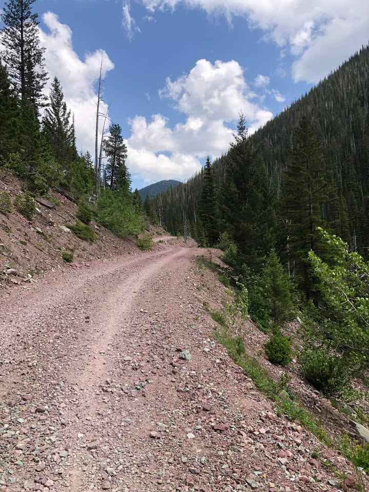
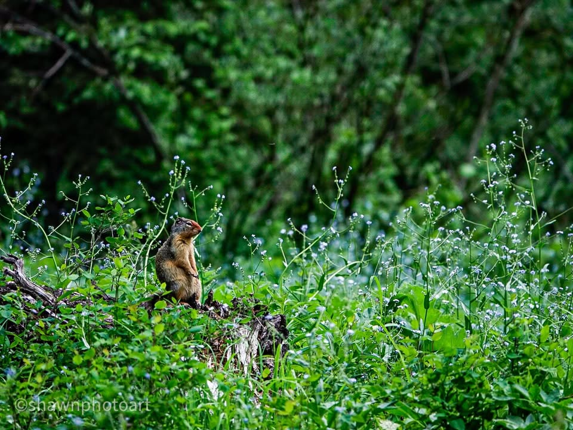
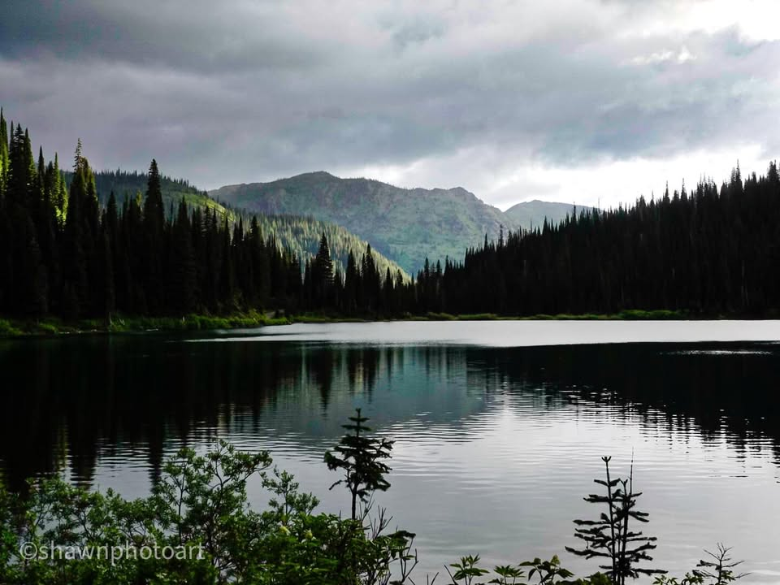
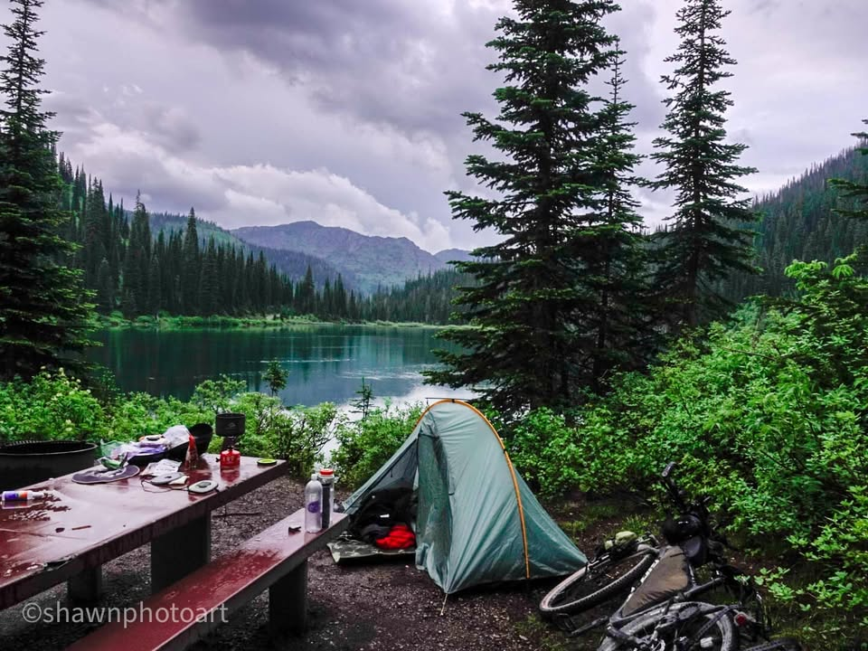

Day 5.. salmon Florentine, little guardians, Big climbs, lake views

14 June 2023 — Day 5
From the Journey
Waking up at an early 6 o’clock, I did not want to be up, but knew I had to get going. Leaving out of town I stopped in to cafe Jax. The only restaurant in town which was a small local diner, and open. I ordered salmon Florentine, extra toast and coffees. It was amazingly delicious. And not because I was starving. If you’re ever in Eureka Montana, you’ve got to eat at cafe Jax. Small town feel, great service, and a small Veterans group meeting in the corner. My kind of place.

14 June 2023 — Day 5
From the Journey
Aspen trees scattered in Green Meadows ,surrounded by pine mountains in the distance, this place is really beautiful. Mountains that will soon be apart of a sweat payment. The price of admission to this experience. Today, there was two upcoming big climbs. Climbs have not been my friend during this trip. My bike is not geared for them. Although right before starting this morning, I called ahead to a bike shop couple hundred miles down the road to coordinate a lower gear so that climbs would be easier. But for now I would have to make do with the gear ratio that I have, and that equaled a 2 mile hike up the first climb.

14 June 2023 — Day 5
From the Journey
Along the way, I spotted this tiny little guardian standing, resolute, guarding his home territory. (See pictures)

14 June 2023 — Day 5
From the Journey
Along the ride up, there was too many deer to count. White tail deer are so common that I stopped taking picture than them.

14 June 2023 — Day 5
From the Journey
In the afternoon the sun was blazing, and I found myself dipping into some mountain bike air-conditioning. Taking my shirt and dumping it into the ice cold Mountain Springs. All the streams around here are ice cold. This definitely helped while hiking at the very steep climbs. Even though the first climb was only 2 miles, it was by far the steepest. At the top, I was exhausted and just laid in the rocks to rest.
While, the second climb was 3 miles long it was not quite as steep. Which made it a lot easier. Toward the top, a couple other bike packers that I had met in the past, caught up to me. And just a mile ahead, there was a gorgeous mountain lake that we decided to camp next to.
Sadly, it started raining on us while we swap stories, ate hot chow, and set up camp. Luckily, it was just a small drizzle, but being up at altitude, made it a little bit colder and made everything wet.
I really do feel under prepared for all of the Climbs/obstacles that I have to do. I think the wrong gearing/equipment really puts me at a disadvantage. In life you rarely find a perfect situation. You’ve always gotta do the best you can with what you’ve got. Then hopefully readjust for next time. But that doesn’t mean you shouldn’t tackle the goal or wait until the perfect conditions exist. If you’re waiting for Perfect, you’re gonna be waiting forever. Get out there now, do the best you can, and don’t judge yourself against others. It’s a losing game. Also, give others the benefit of the doubt that they are doing the best I can with what I’ve got. Don’t judge too harshly.